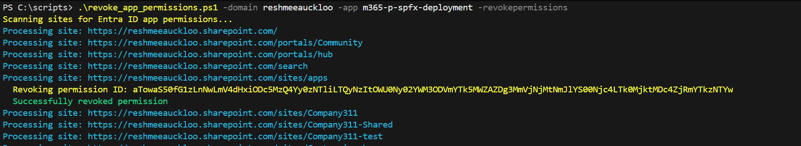

Revoke permissions for a given Azure Entra ID application registration
This script demonstrates how to audit and revoke Entra ID app permissions across SharePoint sites. The script automates the process of scanning all tenant sites, generating CSV reports of app permissions, and revoking access while implementing verification steps to ensure successful removal.
Usage examples
Usage example of the CLI for Microsoft 365 version:

Usage example of the PnP PowerShell version:

Summary
[CmdletBinding(SupportsShouldProcess)]
param(
[Parameter(Mandatory = $true, HelpMessage = "SharePoint admin center URL (e.g., https://contoso-admin.sharepoint.com)")]
[ValidatePattern('^https://')]
[string]$TenantAdminUrl,
[Parameter(Mandatory = $true, HelpMessage = "Display name of the Entra ID application to search for")]
[string]$AppDisplayName,
[Parameter(Mandatory = $false, HelpMessage = "Path for CSV export (optional, defaults to current directory)")]
[string]$OutputPath,
[Parameter(Mandatory = $false, HelpMessage = "Switch to revoke permissions (requires confirmation unless -Force is used)")]
[switch]$RevokePermissions
)
begin {
# Start transcript logging
$dateTime = Get-Date -Format "yyyy-MM-dd_HH-mm-ss"
$transcriptPath = "RevokeAppPermissions_$dateTime.log"
Start-Transcript -Path $transcriptPath | Out-Null
Write-Host "Transcript started: $transcriptPath" -ForegroundColor Cyan
# Set OutputPath if not specified
if ([string]::IsNullOrEmpty($OutputPath)) {
$OutputPath = Join-Path -Path (Get-Location) -ChildPath "EntraIDAppPermissions_$dateTime.csv"
}
else {
# Validate parent folder exists when user specifies path
$parentFolder = Split-Path -Path $OutputPath -Parent
if (-not (Test-Path -Path $parentFolder)) {
Stop-Transcript
throw "Output path parent folder does not exist: $parentFolder"
}
}
Write-Host "Output CSV will be saved to: $OutputPath" -ForegroundColor Cyan
# Ensure user is signed in to CLI for Microsoft 365
Write-Host "Ensuring CLI for Microsoft 365 authentication..." -ForegroundColor Yellow
m365 login --ensure
if ($LASTEXITCODE -ne 0) {
Stop-Transcript
throw "Failed to authenticate with CLI for Microsoft 365. Please run 'm365 login' manually."
}
Write-Host "Successfully authenticated" -ForegroundColor Green
# Initialize script-level variables
$script:ReportCollection = [System.Collections.Generic.List[PSCustomObject]]::new()
$script:TotalSites = 0
$script:PermissionsFound = 0
$script:PermissionsRevoked = 0
$script:Failures = 0
}
process {
# Get all SharePoint sites
Write-Host "Retrieving all SharePoint sites..." -ForegroundColor Yellow
$sitesJson = m365 spo site list --output json 2>&1
if ($LASTEXITCODE -ne 0) {
Write-Warning "Failed to retrieve sites: $sitesJson"
return
}
$sites = @($sitesJson | ConvertFrom-Json)
$script:TotalSites = $sites.Count
Write-Host "Found $($script:TotalSites) sites to scan" -ForegroundColor Green
if ($script:TotalSites -eq 0) {
Write-Host "No sites found to process" -ForegroundColor Yellow
return
}
# Process each site
$siteCounter = 0
foreach ($site in $sites) {
$siteCounter++
Write-Progress -Activity "Scanning sites for app permissions" -Status "Processing site $siteCounter of $($script:TotalSites): $($site.Url)" -PercentComplete (($siteCounter / $script:TotalSites) * 100)
Write-Verbose "Processing site: $($site.Url)"
# Get app permissions for the specified app
try {
$permissionsJson = m365 spo site apppermission list --siteUrl $site.Url --appDisplayName $AppDisplayName --output json 2>&1
if ($LASTEXITCODE -ne 0) {
Write-Verbose "No permissions found or error retrieving permissions for site: $($site.Url)"
continue
}
$permissions = @($permissionsJson | ConvertFrom-Json)
if ($permissions.Count -eq 0) {
Write-Verbose "No permissions found for app '$AppDisplayName' on site: $($site.Url)"
continue
}
# Process each permission
foreach ($permission in $permissions) {
$script:PermissionsFound++
$reportItem = [PSCustomObject]@{
PermissionId = $permission.permissionId
SiteUrl = $site.Url
SiteTitle = $site.Title
AppDisplayName = $permission.appDisplayName
AppId = $permission.appId
Roles = ($permission.roles -join '|')
RevokedDate = ""
Status = "Not Revoked"
}
# Revoke permission if switch is enabled
if ($RevokePermissions) {
if ($PSCmdlet.ShouldProcess($site.Url, "Revoke permission for app '$AppDisplayName' (ID: $($permission.permissionId))")) {
try {
Write-Host " Revoking permission ID: $($permission.permissionId) on $($site.Url)" -ForegroundColor Yellow
m365 spo site apppermission remove --siteUrl $site.Url --id $permission.permissionId --force 2>&1 | Out-Null
if ($LASTEXITCODE -eq 0) {
$script:PermissionsRevoked++
$reportItem.RevokedDate = Get-Date -Format "yyyy-MM-dd HH:mm:ss"
$reportItem.Status = "Success"
Write-Host " Successfully revoked permission" -ForegroundColor Green
}
else {
$script:Failures++
$reportItem.Status = "Failed"
Write-Warning " Failed to revoke permission ID: $($permission.permissionId)"
}
}
catch {
$script:Failures++
$reportItem.Status = "Failed"
Write-Warning " Error revoking permission: $($_.Exception.Message)"
}
}
else {
$reportItem.Status = "Skipped (WhatIf)"
}
}
else {
Write-Host " Found permission ID: $($permission.permissionId) (report only mode)" -ForegroundColor Cyan
}
$script:ReportCollection.Add($reportItem)
}
}
catch {
Write-Warning "Error processing site $($site.Url): $($_.Exception.Message)"
continue
}
}
Write-Progress -Activity "Scanning sites for app permissions" -Completed
}
end {
# Export CSV report
if ($script:ReportCollection.Count -gt 0) {
Write-Host "Exporting report to CSV..." -ForegroundColor Yellow
$script:ReportCollection | Sort-Object SiteUrl | Export-Csv -Path $OutputPath -NoTypeInformation -Force
Write-Host "Report exported to: $OutputPath" -ForegroundColor Green
}
else {
Write-Host "No app permissions found for '$AppDisplayName'" -ForegroundColor Yellow
}
# Display summary
Write-Host "" -NoNewline
Write-Host "========================================" -ForegroundColor Cyan
Write-Host " SUMMARY" -ForegroundColor Cyan
Write-Host "========================================" -ForegroundColor Cyan
Write-Host "Total sites scanned : " -NoNewline
Write-Host $script:TotalSites -ForegroundColor White
Write-Host "Permissions found : " -NoNewline
Write-Host $script:PermissionsFound -ForegroundColor White
if ($RevokePermissions) {
Write-Host "Permissions revoked : " -NoNewline
Write-Host $script:PermissionsRevoked -ForegroundColor Green
Write-Host "Failures : " -NoNewline
if ($script:Failures -gt 0) {
Write-Host $script:Failures -ForegroundColor Red
}
else {
Write-Host $script:Failures -ForegroundColor Green
}
}
Write-Host "========================================" -ForegroundColor Cyan
if ($RevokePermissions -and $script:PermissionsRevoked -gt 0) {
Write-Host "Permissions have been revoked. Please verify in your Entra ID admin center." -ForegroundColor Yellow
}
# Stop transcript
Write-Host "Transcript saved to: $transcriptPath" -ForegroundColor Cyan
Stop-Transcript | Out-Null
}
# Report only mode - scan all sites for app permissions
# ./Revoke-AppSitePermissions.ps1 -TenantAdminUrl "https://contoso-admin.sharepoint.com" -AppDisplayName "MyApp"
# Revoke permissions with confirmation prompt
# ./Revoke-AppSitePermissions.ps1 -TenantAdminUrl "https://contoso-admin.sharepoint.com" -AppDisplayName "MyApp" -RevokePermissions
# Revoke permissions without confirmation (use with caution)
# ./Revoke-AppSitePermissions.ps1 -TenantAdminUrl "https://contoso-admin.sharepoint.com" -AppDisplayName "MyApp" -RevokePermissions -Force
# Preview what would be revoked (WhatIf mode)
# ./Revoke-AppSitePermissions.ps1 -TenantAdminUrl "https://contoso-admin.sharepoint.com" -AppDisplayName "MyApp" -RevokePermissions -WhatIf
Check out the CLI for Microsoft 365 to learn more at: https://aka.ms/cli-m365
Important changes coming to the way you login into CLI for Microsoft 365 (effective 9th September 2024) see Changes in PnP Management Shell registration in Microsoft 365
Source Credit
Sample idea first appeared on Revoke Entra ID App Permissions from SharePoint Sites Using PnP PowerShell.
Contributors
| Author(s) |
|---|
| Reshmee Auckloo |
| Adam Wójcik |
Disclaimer
THESE SAMPLES ARE PROVIDED AS IS WITHOUT WARRANTY OF ANY KIND, EITHER EXPRESS OR IMPLIED, INCLUDING ANY IMPLIED WARRANTIES OF FITNESS FOR A PARTICULAR PURPOSE, MERCHANTABILITY, OR NON-INFRINGEMENT.